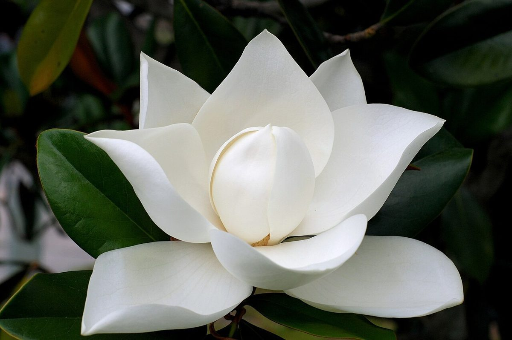
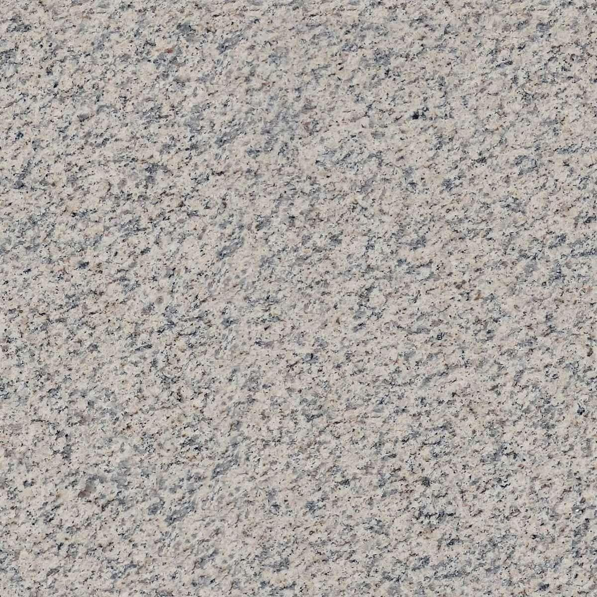
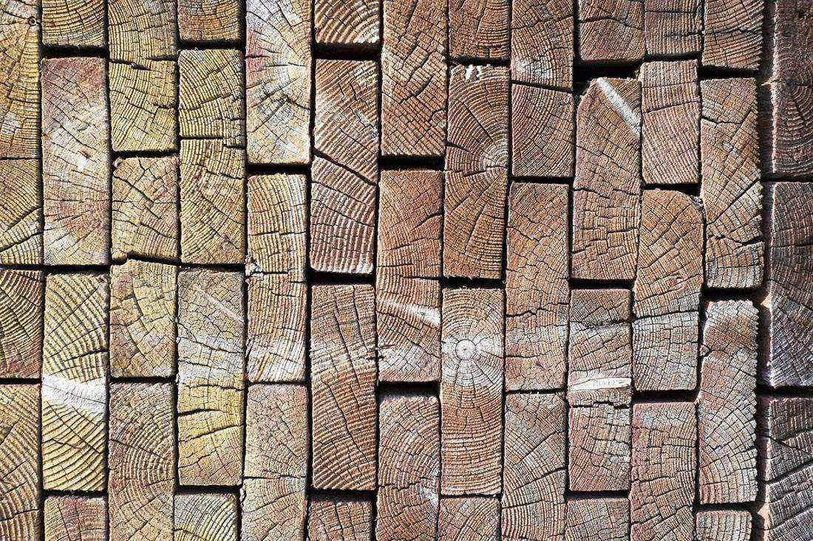
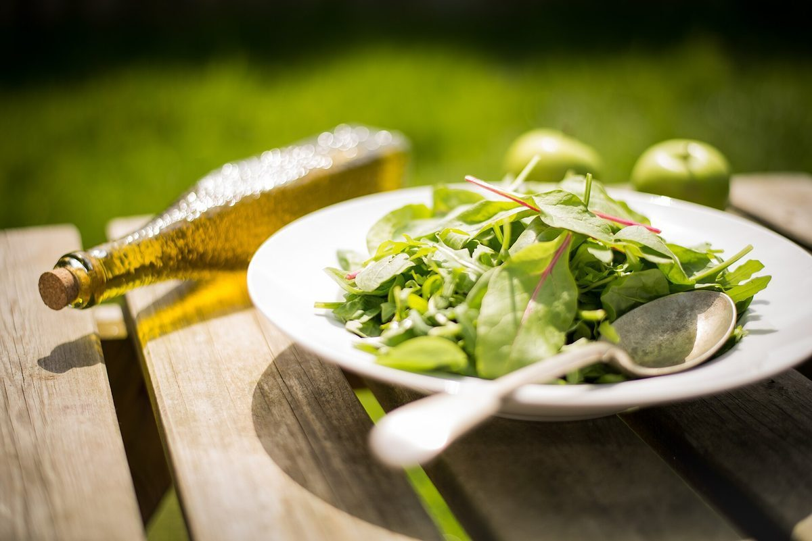
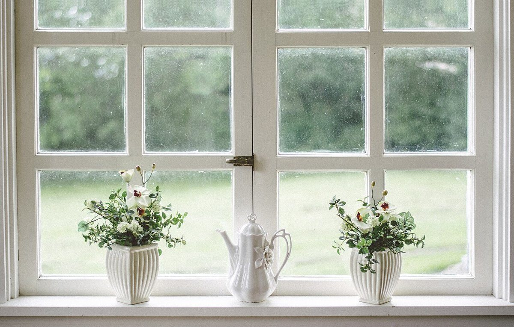

店のこと
蚊帳の部位の配置図
お店の詳しい情報は準備中です。ここでは、制作側が考えたデザインの考え方を紹介します。


制作側の連想
番号は、部位の番号
ホームの図にある1〜6の番号は、それぞれ蚊帳の部位の名前に対応します。蚊帳(吊り下げ式のモスキートネット)の部位を図にしたもので、制作側の連想です。お店の理念・由来とは無関係で、実際の製品の仕様を示すものでもありません。
1吊り手(吊り輪と吊り紐)
天井の一点から四隅へ伸びる紐と、その先の輪。蚊帳全体をぶら下げる部分。
2天井布
蚊帳の上面をふさぐ布。四隅で吊り紐とつながる。
3側面の網地
四方を囲む、細かな格子状の布。空気は通し、小さな虫は通さない面。
4縁布(へり)
網地の端をぐるりと縁取る、厚めの帯状の布。ほつれを防ぎ、吊り紐の力を受ける。
5出入り口(合わせ)
正面で左右の布が重なる切れ目。重なりを手でめくって出入りする。
6裾(すそ)
蚊帳の下端の帯。床に近い側で、全体の形を保つ。
写真(イメージ)
写真(イメージ)



写真はイメージです。お店のものではありません。